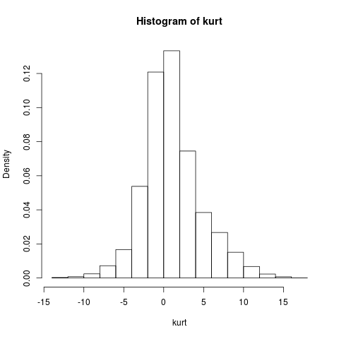

First, create some data with a markedly high kurtosis (this is a rather crude way to do that but the alternative would mean manipulating probability distribution functions and life's too short.)
The function rnorm(points, mean, sd) can be used to generate a set of points with a specific mean and standard deviation from a normal distribution. We will use it to create data as follows:
a <- rnorm(5000,0,2)
b <- rnorm(1000,-2,4)
c <- rnorm(3000, 4,4)
high_kurtosis<-c(a,b,c)
hist(high_kurtosis,freq=FALSE)
This produces

Use the function rnorm() to generate 10000 data points with mean equal to zero and standard deviation equal to one. What is the kurtosis of the resulting data set?
What is the kurtosis of the standard normal distribution?